Capítulo 4
Química na indústria têxtil: A arte de tingir tecidos
Que relações a Química tem na indústria têxtil? Que substâncias tem relação com os tecidos? Quais procedimentos são relevantes?
CONTEXTUALIZANDOO tingimento de tecidos é uma arte que começou há milhares de anos e foi avançando à medida que técnicas modernas passaram a ser desenvolvidas. O tingimento consiste em algumas etapas 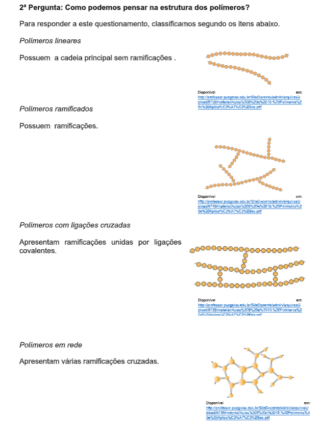 que são escolhidas conforme a natureza da fibra têxtil, características estruturais, classificação e disponibilidade do corante para aplicação, propriedades de fixação compatíveis com o destino do material a ser tingido. O processo de tingimento têxtil é conhecido como um processo químico capaz de modificar a cor da fibra têxtil, aplicando corantes ou pigmentos em solução ou dispersão, podendo variar conforme o artigo têxtil que será modificado. Existem diversas formas de se obter os resultados, inclusive utilizando métodos de tingimento possíveis de serem realizados artesanalmente como no caso Tie-dye.
(Re)construindo conceitosDurante o processo de tingimento três etapas são consideradas importantes: a montagem, a fixação e o tratamento final. A fixação do corante à fibra é feita através de reações químicas, e da solubilização do corante. A forma de fixação da molécula do corante as fibras geralmente são feitas em solução aquosa e pode envolver basicamente quatro tipos de interações químicas: ligação iônica, de hidrogênio, de van der Waals e covalentes. Basearemos nossas atividades em questionamentos.
1ºPergunta: Como Funcionam as interações químicas para a fixação de corantes nas fibras?Como dito anteriormente existem alguns tipos de interações químicas, que são ligação iônica, de hidrogênio, de van der Waals e covalentes. E, para organizar a resposta a este questionamento organizaremos em uma tabela, veja abaixo:
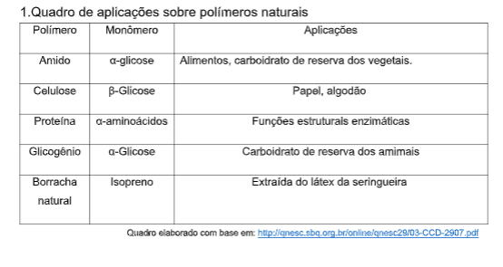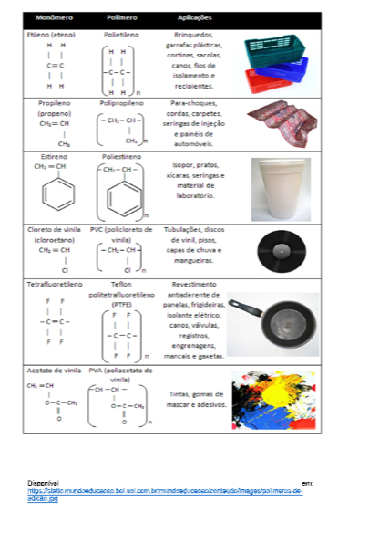
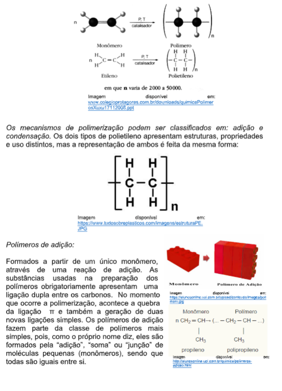
Com base nesta imagem podemos ampliar um pouco mais estes conceitos, com isso aprofundaremos um pouco mais, definindo-os:
- Soluções: Nestas não há a possibilidade de enxergar as partículas seja a olho nu ou com microscópio, podemos chamá-las de misturas homogêneas, outra característica relevante está associada ao fato de que não conseguimos separá-las com nenhum processo de filtragem. Ainda é relevante dizer que em soluções o que queremos dispersar chamaremos de soluto e o que será responsável pela disperso, chamaremos de solvente.
- Dispersões Coloidais: Nesta classificação de dispersão as partículas não podem ser vistas a olho nu, porém ao se olhar com microscópio nota-se a presença de partículas distintas. Algumas características marcantes são os fatos de não ocorrer sedimentação naturalmente, existe a necessidade de centrifugação, além de não ser possível realizar a separação por filtração.
- Suspensões: Se apresentam em sistemas que, mesmo a olho nu se consegue perceber as partículas (sistema heterogêneo). Uma característica marcante está no fato de ser possível realizar a separação por filtragem.
3ª Pergunta: Como classificar as soluções em relação ao seu estado Físico? 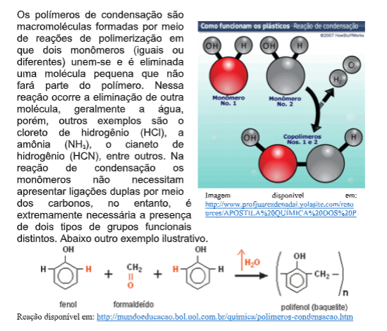 4ª Pergunta: Como caracterizamos os solutos (o que queremos dispersar) em relação a sua natureza?Existem algumas classificações para este tipo de características, que organizamos em um quadro.
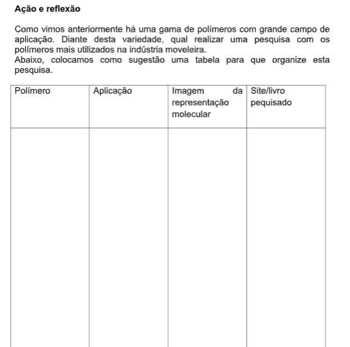5ª Pergunta: Como Classificamos a quantidade de soluto e solvente que compõe a solução (saturação da solução)?
A classificação pode ser dada da seguinte maneira, solução insaturadas, saturadas e supersaturadas, abaixo organizamos esta classificação em uma forma mais aprofundada, veja:
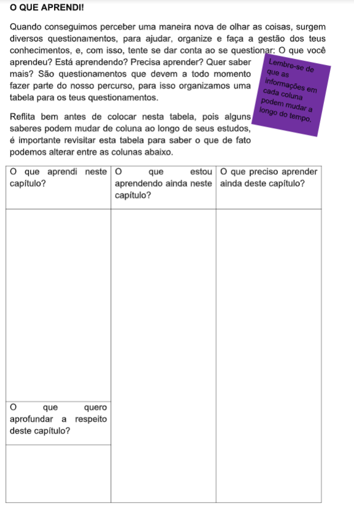 6ª Pergunta: Como proceder para determinar a concentração de soluções? 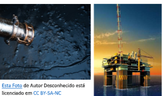 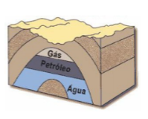 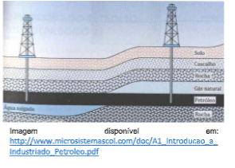 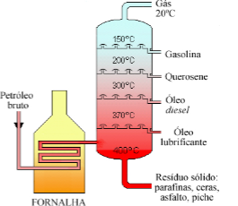 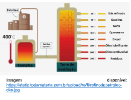 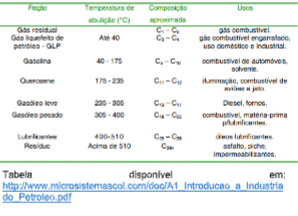